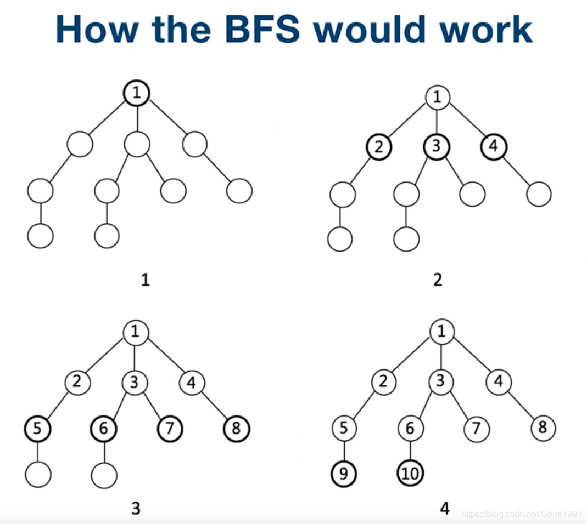
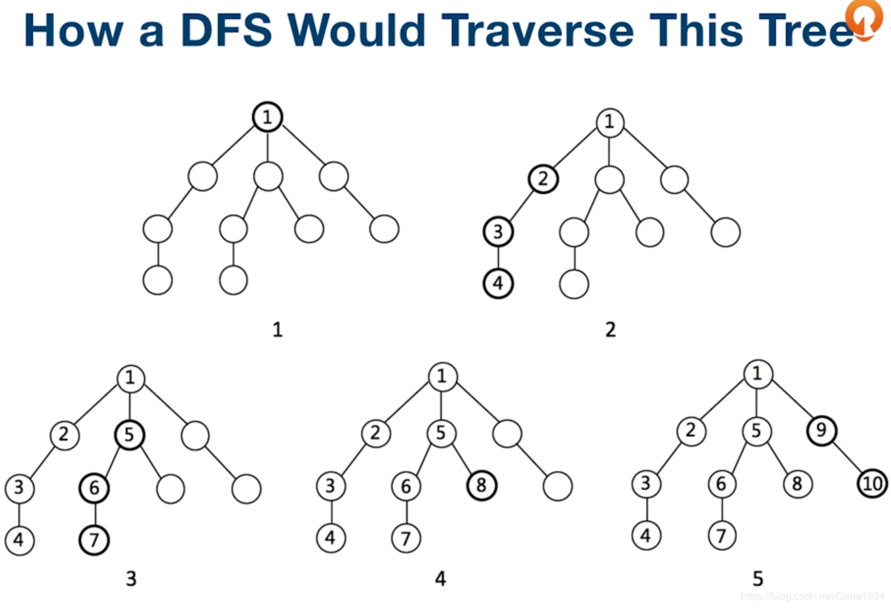

BFS(广度优先遍历，Breath First Search)
DFS(深度优先遍历，Depth First Search)
二叉树定义
1
2
3
4
5
6
| public class TreeNode {
int val;
TreeNode left;
TreeNode right;
TreeNode(int x) { val = x; }
}
|

队列实现BFS
1
2
3
4
5
6
7
8
9
10
11
12
13
14
15
| public void BFSWithQueue(TreeNode root) {
Queue<TreeNode> queue = new LinkedList<>();
if (root != null)
queue.add(root);
while (!queue.isEmpty()) {
TreeNode treeNode = queue.poll();
if (treeNode.left != null)
queue.add(treeNode.left);
if (treeNode.right != null)
queue.add(treeNode.right);
}
}
|

栈实现DFS
1
2
3
4
5
6
7
8
9
10
11
12
13
14
15
16
17
18
19
| public void DFSWithStack(TreeNode root) {
if (root == null)
return;
Stack<TreeNode> stack = new Stack<>();
stack.push(root);
while (!stack.isEmpty()) {
TreeNode treeNode = stack.pop();
if (treeNode.right != null)
stack.push(treeNode.right);
if (treeNode.left != null)
stack.push(treeNode.left);
}
}
|
递归实现DFS
1
2
3
4
5
6
7
8
9
10
11
| public void DFSWithRecursion(TreeNode root) {
if (root == null)
return;
if (root.left != null)
DFSWithRecursion(root.left);
if (root.right != null)
DFSWithRecursion(root.right);
}
|